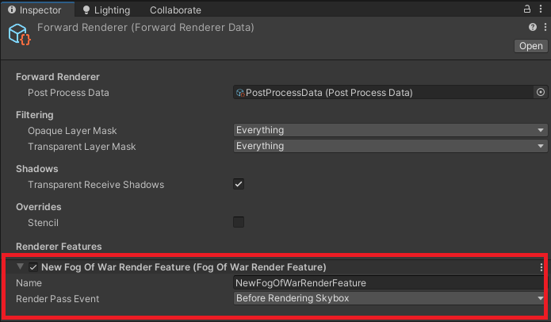
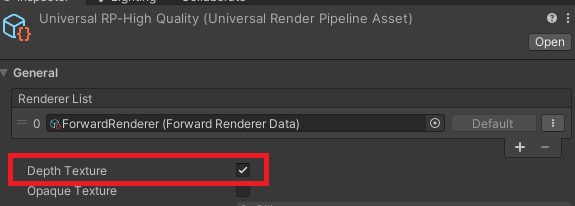
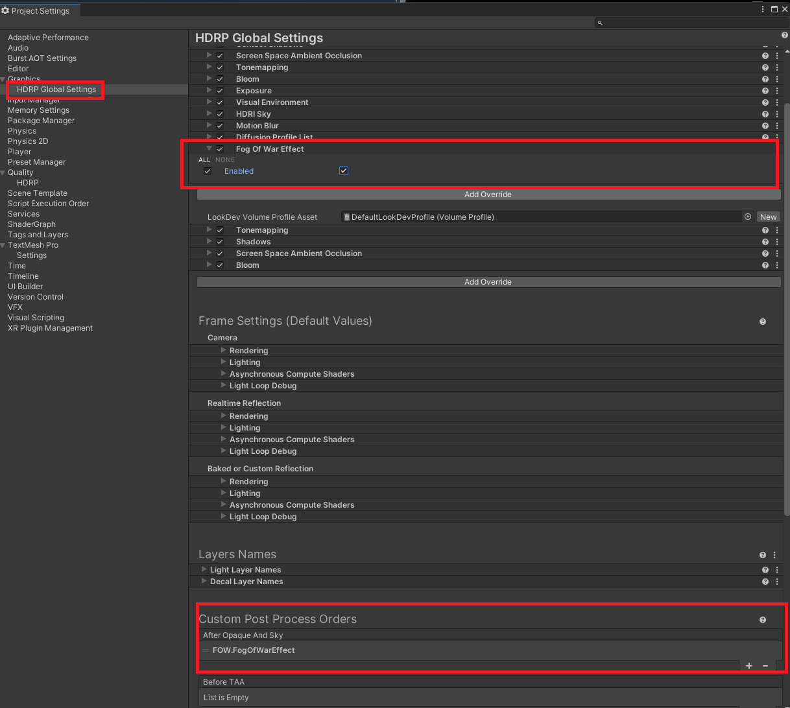

Render Pipeline Setup
Pixel-Perfect Fog Of War renders as a full-screen camera effect. How that effect is injected depends on your render pipeline. Follow the section for the pipeline your project uses.
Built-In Render Pipeline
Add a Fog of War image effect component to your main camera:
- Use FOW Image Effect Opaque in most cases for 3D. (This was the only option before update 3.0.)
- Use FOW Image Effect for 2D.
See the FOW Image Effect component reference for details.
Universal Render Pipeline (URP)
Import
FogOfWar/FOW-URP(see Installation).Add the Fog Of War render feature to your Renderer Data asset.

Ensure Depth Texture is enabled on your URP assets.

Important
Add the render feature to all of your Renderer Data assets — including the ones referenced in both your Graphics settings and your Quality settings.
High Definition Render Pipeline (HDRP)
- Import
FogOfWar/FOW-HDRP(see Installation). - HDRP is supported through the Volume Framework. First, add the effect to the After Opaque and Sky section of Custom Post Process Orders in Project Settings > HDRP Default Settings.
- Add the Fog Of War effect to your Default Volume Profile asset, or to a Volume component in your scene.

Next Steps
- Revealers — start carving line of sight out of the fog
- Fog Appearance — choose how the fog looks